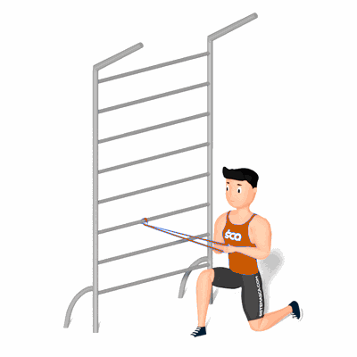

Pallof Press Semi-Ajoelhado

O exercício tem como objetivo o fortalecimento dos músculos oblíquos e a estabilidade da lombar, auxiliando na prática de atividades físicas e diárias.
Ficha Técnica
Tipo: Funcional
Grupo Muscular: Abdome
Aparelho: Nenhum
Músculos: Nenhum
Como realizar
- Projete a frente a perna que está ao lado do espaldar e realize o avanço. Desça o tronco numa posição vertical, com um alinhamento de pernas num ângulo de 90°;
- Faça um laço com a faixa elástica circular em torno de um objeto robusto na altura do peito;
- Agarre a extremidade oposta com ambas as mãos e afaste-se do ponto de ancoragem para que a faixa fique esticada e perpendicular à frente do seu corpo;
- Mantenha as mãos cruzadas no umbigo e os cotovelos flexionados, essa é sua posição inicial;
- Pressione as mãos para frente para estender a faixa, certificando-se de não deixar a faixa puxá-lo para um lado;
- Mantenha nessa posição por alguns segundos e depois retorne a posição inicial;
- Complete uma série antes de passar para o lado oposto.
 RC STORE
RC STORE